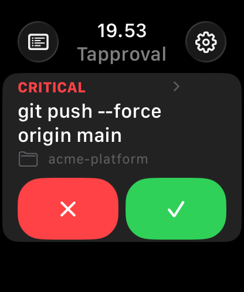
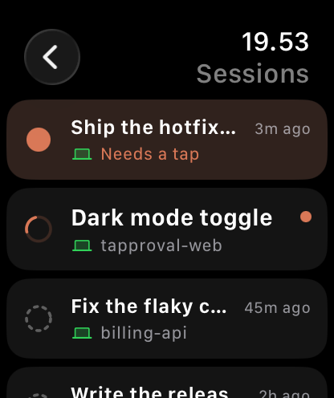
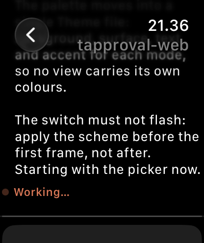

Claude Code asks.
Your wrist answers.
Tapproval is a remote control for Claude Code on your Apple Watch. When the agent on your computer asks permission, the question lands on your wrist and one tap answers it. No account, no server, nothing leaves your own machines.
Get it on the App Store Try the beta on TestFlight
How it works
Three steps, and the middle one is a sentence you say to Claude Code.
Install the watch app
From the App Store, on any Apple Watch running watchOS 10 or later.
Tell Claude Code once
On the computer where Claude Code runs, say:
Install the Tapproval plugin from marcobelini/tapproval-helper
Claude installs its own free, open-source bridge. You approve it like anything else and never touch a terminal.
Raise your wrist
The watch finds your computer by itself: on your Wi-Fi, away from home through a private travel address, or through your own iCloud as a fallback.
What it does
Everything the agent asks a person for, answered where the person is.


Real questions, real options
Multiple-choice questions arrive with the same choices as on your desktop.
Sessions, live
Start a session from the wrist, follow it, send it instructions.
Your day
What was handled without you, what you decided, how much you used.
Claude Code today
Any Mac or Linux machine running Claude Code. Other agents are on the roadmap.
Privacy
Tapproval collects nothing. There are no accounts, no analytics and no servers of ours. Prompts and conversations travel between your watch and your computer, and, when the direct link is down, through your own iCloud. The bridge is open source, so you can check.
Price
Your first 100 answered prompts. Reading sessions and the day's overview stay free forever.
Unlocks unlimited answers, forever. No subscription. A one-dollar coffee for the maker is optional, in Settings.
Support
One address for everything, questions and suggestions alike. Say what Tapproval should do next.